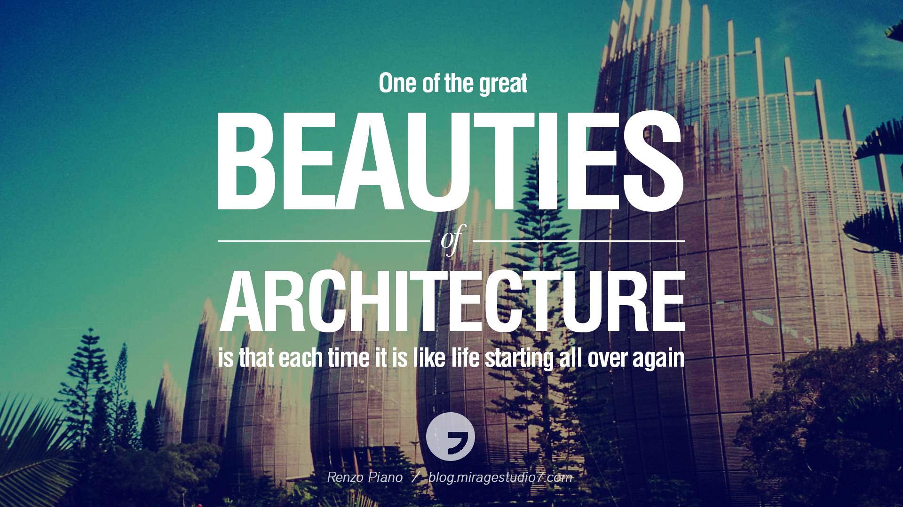
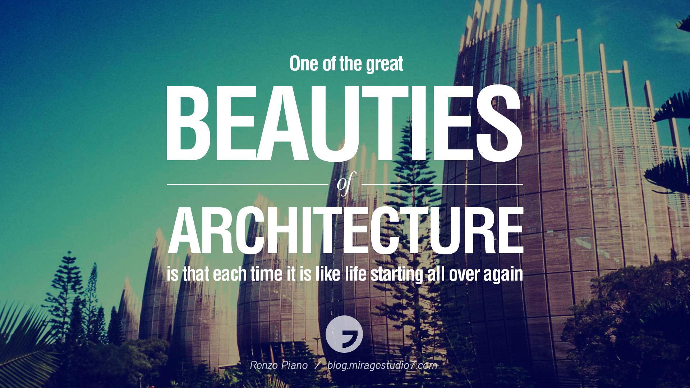

Hello and welcome to my personal page all about me and how I view my future career. My name is Dominae Ponds and I am currently nineteen years old. I am from the heart of Kansas City, Missouri where I graduated from Southeast High School. While in school, I participated in Track and Field as a sprinter and played softball. I was a part of the National Honors Society, the 20/20 Leadership Program, and was an A and B honor roll student. I juggled being a student, athlete, and having a job all throughout my high school career. It was hard doing so many things and trying to find out what I wanted to do in the future that I will love and be happy with. After finding out what keeps me happy, I decided to peruse my career in architecture.
I always had a passion for art. Throughout my childhood, I would draw and paint in my free time or go downtown and enjoy the enormous building and landscapes. I enjoyed my art classes because I always learned a new style of painting, drawing, and contrasting colors. Painting keep me at ease and happy. I also always had the urge to travel because I never been out of the state of Missouri, unless I am going to Kansas, but that doesn't count since were neighbors. I want to be able to explore various sites and landscapes that is build all around the world. I chose my career as an architect because I am good at math, I love designing or creating things, and I want to build things in the future that people will fall in love with and remember the name behind the design.
I am a first year and first generation college student attending Graceland University in the little town of Lamoni, Iowa. Being a first-generation college student is challenging, but from all the support that Graceland provides and self determination, keeps me pushing to always be better and never give up. I am currently majoring in Graphic Design because I want to become an architect. I like what I do as far as coding and designing and making websites. Even though Graceland doesn't provide a "Architecture" major, I will continue to major in graphic design. Once I graduate, I will further my studies by completing my masters in Architecture.
Some of my beginning works in my Intro to Web Programing course as a freshman, consist of:

 
